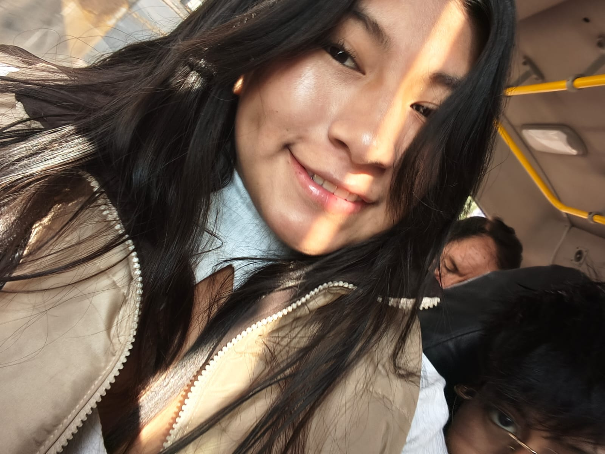

Para ti, Yadi 💜
Una carta escrita con cariño
Unas palabras, solo para ti
Una canción para esta cartaA Little Death · The Neighbourhood
Cargando el reproductor oficial…
Escuchar en YouTube ↗
Yadi, esta carta y estas flores son para ti.
Quería dedicarte unas palabras y regalarte un momento bonito. A veces un detalle pequeño basta para cambiarle el ritmo al día, y ojalá este sea uno de esos detalles para ti.
Te dejo estas flores que no se marchitan y un poquito de música para acompañar la lectura. Espero haberte sacado una sonrisa, Yadi. Este detalle va con mucho cariño.
Pequeños instantes para tiCuatro videos entre estas líneas
También quería dejarte estos pequeños instantes, para acompañar estas palabras. Elige uno y míralo sin prisa.
Un instante para ti
Tú eliges cuándo darle play. Cada instante tiene su propio sonido.
No se pudo cargar el video. Puedes abrirlo aquí.